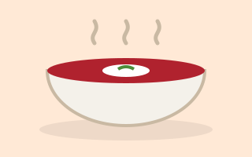

Український борщ

Класичний борщ із буряком, капустою та м’ясом на кістці.
| Час | Порцій | Складність |
|---|---|---|
| 2 години | 6 | Середня |
Інгредієнти
- 500 г яловичини на кістці
- 2 буряки
- 300 г білокачанної капусти
- 3 картоплини
- 1 морква і 1 цибулина
- 2 ст. л. томатної пасти
- Сіль, лавровий лист, зелень, сметана
Приготування
- Зваріть бульйон із м’яса протягом 1,5 години, знімаючи піну.
- Обсмажте цибулю, моркву й буряк із томатною пастою.
- Додайте в бульйон картоплю, через 10 хв — капусту.
- Покладіть засмажку, сіль і лавровий лист, варіть ще 10 хв.
- Дайте настоятися 20 хв і подавайте зі сметаною та зеленню.